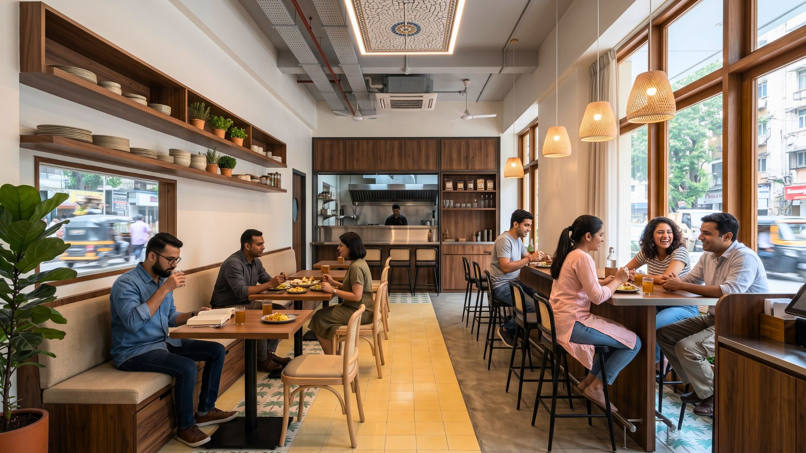
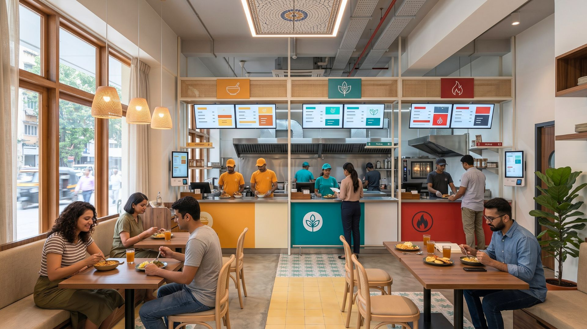
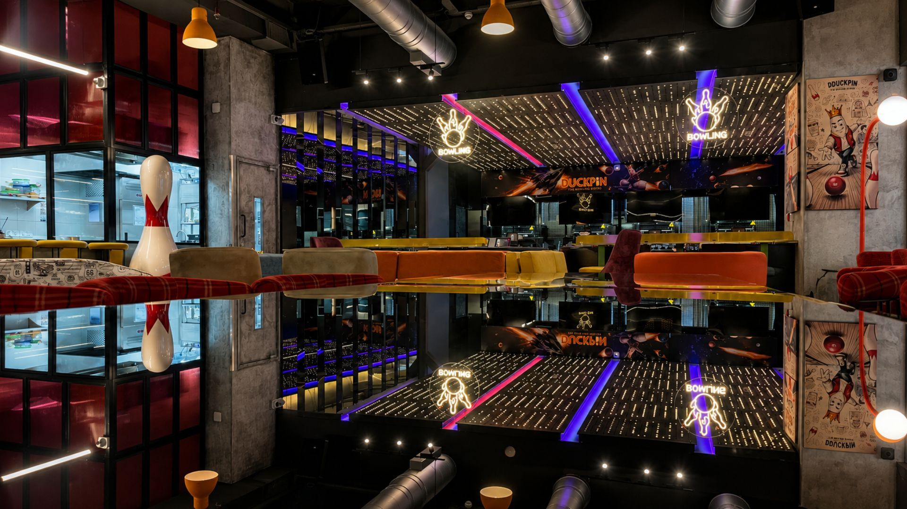
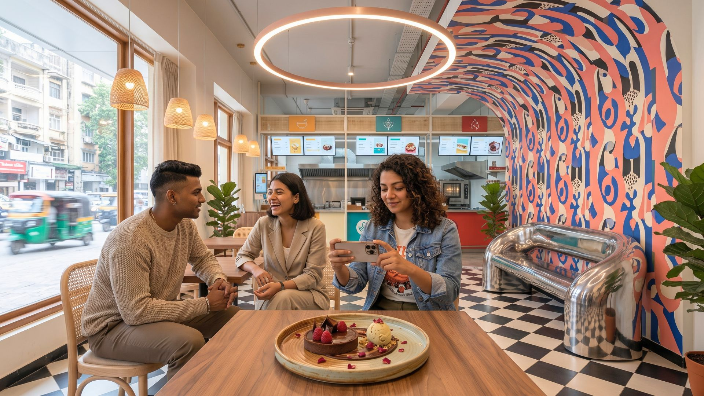
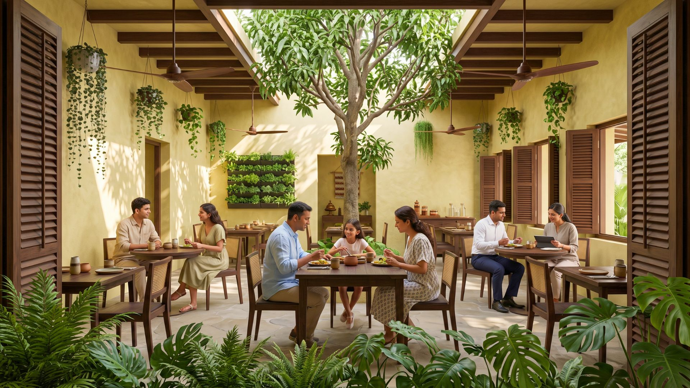
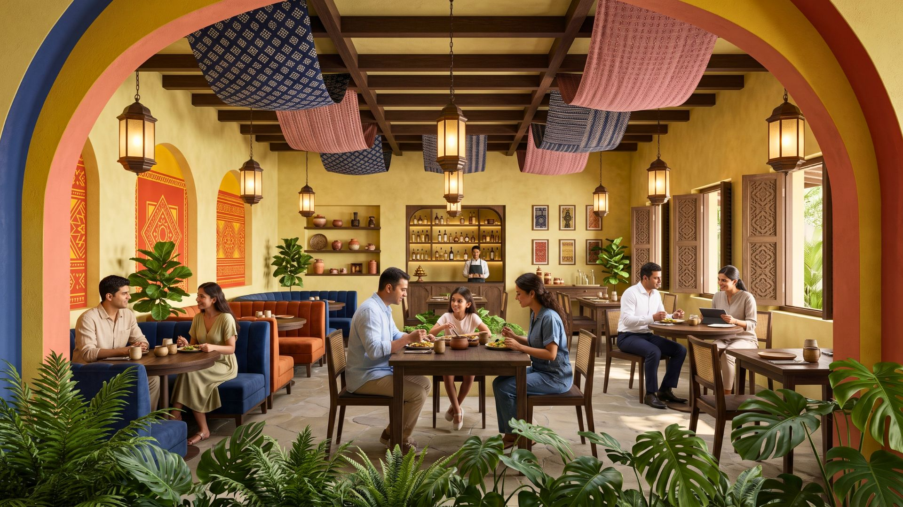
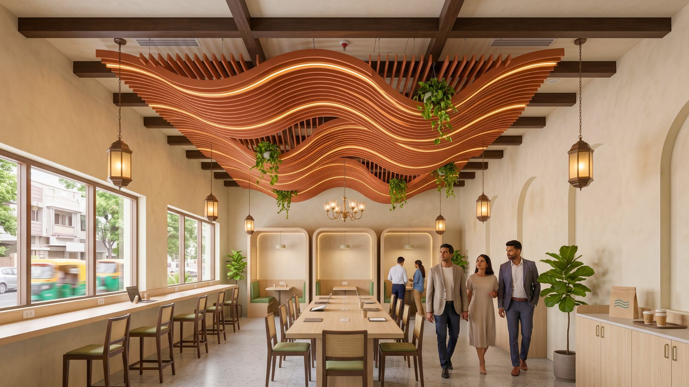
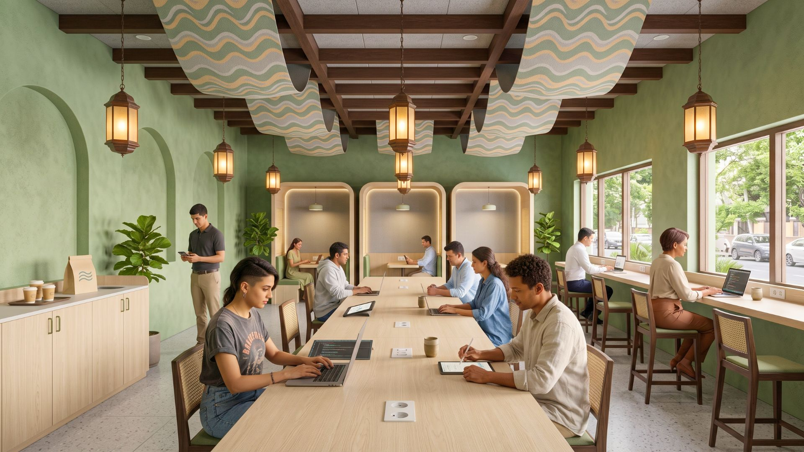
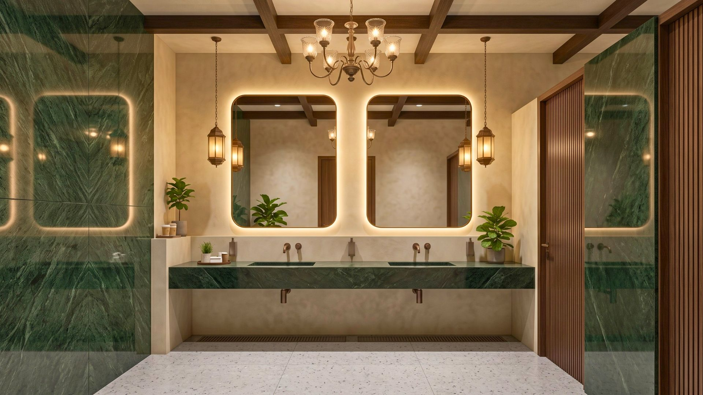

Restaurant design is evolving to create spaces that do more than serve meals; they create lasting memories. As diners seek experiences beyond the plate, here's what's shaping India's F&B spaces in 2025.
Multi-Themed Spaces: A New Flavor Every Visit

Restaurants are moving away from singular themes toward multi-purpose environments — different vibes in one space. Guests can enjoy brunch in a tropical nook, then sip cocktails in an industrial-chic lounge, all within the same establishment.
Benefits include repeat visits, Instagram-worthy content, and a fresh dining experience every time.
Micro Dining: Small Spaces, Big Impact
Compact eateries — around 300 sq. ft. — are gaining traction, with formats like Bombay Daak, The Village Shop, and Sun and Moon leading the way. Advantages include:
- Lower operational costs and faster ROI
- Intimate, shareable experiences
- Scalable models for urban expansion
Co-Branded Outlets: Kitchens That Work Harder

Multiple brands operating from a single kitchen maximize efficiency and profitability. Pioneers like Maiz and Harvest demonstrate this model's viability for operators looking to do more with less real estate.
Eatertainment: When Dining Meets Play

Dining venues are integrating entertainment — air hockey, VR gaming, live performances — transforming meals into adventures that generate social media buzz and keep guests staying (and spending) longer.
Instagram-Worthy Decor: Bolder Is Better

Restaurants are going all in with neon signs, bold wallpapers, and eye-catching patterns. Design now serves a marketing purpose, as diners share spaces on social platforms before they've even ordered.
Natural Elements: Bringing the Outdoors In

Establishments are incorporating rattan furniture, stoneware tableware, earthy tones, vertical gardens, and hanging plants to create inviting, eco-conscious spaces.
Whimsical Themes: A Local Twist

Cultural and regional inspiration is shaping décor — Rajasthani bazaar aesthetics, Kerala backwater themes, and Indian festival imagery like Durga Puja and Onam. These designs create emotional connections and attract both local and tourist clientele.
Embedded Technology: Smart Spaces That Work for You

Modern amenities now include table charging ports, ordering tablets for meal customization, and robust Wi-Fi infrastructure for work-from-café patrons.
Statement Ceilings: Look Up!

Ceilings are becoming design focal points — intricate patterns, suspended plants, and bold lighting installations that guests notice the moment they walk in.
Luxury Bathrooms: Because Details Matter

Bathrooms now feature marble walls, smart mirrors, touchless faucets, and spa-like lighting — reflecting brand quality through even the smallest details.
The Key Takeaway
Customers seek experiential dining beyond food. Bold design choices differentiate establishments in a crowded market — because a great space isn't just a place to eat, it's a place people talk about.
Ready to reimagine your space for 2025? At SprintCo, we help restaurant owners turn design into a competitive advantage. Let's build a space guests can't stop talking about.